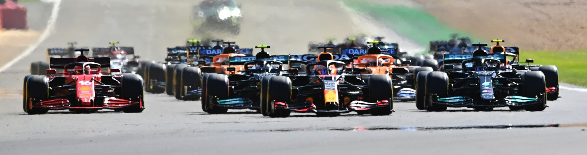

La temporada 2022 del Campeonato Mundial de Fórmula 1 2022 comenzó con el Gran Premio de Bahréin con una performance prácticamente perfecta para el equipo Ferrari. Sus pilotos Charles Leclerc y Carlos Sainz obtuvieron los dos primeros puestos, mientras el Mercedes de Lewis Hamilton completó el podio. La victoria de Leclerc se veía venir desde la prueba de clasificación donde logró la pole.
La partida mostró a un decidido Max Verstappen del team Oracle Red Bull Racing buscando tomar la punta antes de la primera curva, pero la potencia del Ferrari al final de la recta le permitió a Leclerc mantenerse adelante. Al mismo tiempo, el otro Ferrari de Carlos Sainz intentó sobrepasar a Max Verstappen, quien pudo protegerse ante el ataque del español. El ex campeón Lewis Hamilton sobrepasó a Checo Pérez, mientras que a Valtteri Bottas le fue bastante mal retrocediendo del sexto a la decimocuarta casilla. La vuelta inicial se cumplió con Leclerc, Verstappen, Sainz, Hamilton, Magnussen, Pérez, Russell y Gasly en las primeras ubicaciones.
Sergio Checo Pérez, compañero de Max Verstappen, retornó a la lucha tras haber perdido dos posiciones y en la vuelta tres, pudo rebasar a Magnussen y recuperar un puesto. La fecha de apertura del Campeonato Mundial de Fórmula 1 2022, ya en sus primeros minutos, nos prometía una carrera muy cerrada por la forma cómo cada piloto y sus monoplazas peleaban palmo a palmo para meterse en la zona de los puntos.
Cumplidos los diez giros del GP de Bahréin, Leclerc mantenía el liderazgo con solvencia, Verstappen hacía lo imposible por acercarse al piloto de Mónaco, Sainz miraba por el espejo al cada vez más inspirado Pérez, quien ya había sobrepasado a Hamilton y Russell. Magnussen, Gasly, Ocon y Alonso completaban los diez primeros de la carrera.
En la vuelta 15, Verstappen ingresó a pits y en la 16 Leclerc hizo lo propio. A partir de la 17, Max Verstappen atacó con fuerza a Charles Leclerc y tomó momentáneamente la delantera al final de la recta principal, pero entre las curvas tres y cuatro el de Ferrari recuperó la punta. Verstappen repitió una vuelta más tarde aprovechando el DRS, pero Leclerc le devolvió la maniobra en el mismo sector. Desde ese momento el piloto de Red Bull toma consciencia que Ferrari caminaba con mayor confiabilidad y buscó proteger su segundo lugar, ya que Carlos Sainz, tercero, era un peligro inminente.
En el giro 20 el pelotón era comandado por Leclerc, Verstappen, Sainz, Pérez, Magnussen, Gasly, Alonso y Ocon. Varios conductores ingresan a pits vueltas más tarde, pero las posiciones se mantienen estables. Reiteradas comunicaciones de Verstappen con su equipo a mitad de la cita, indican que siente algo raro en su auto. A pesar de lo disputado de la prueba no es hasta la vuelta 46 que las cosas cambian, debido a que Pierre Gasly presentó problemas en su unidad de potencia y un posterior incendio del AlphaTauri. El coche de seguridad ingresó a la pista y permaneció hasta el giro 50, a siete de la bandera a cuadros.
La sustancial diferencia que había logrado Charles Leclerc sobre Max Verstappen y Sainz sobre Pérez se vio reducida a una fracción. Al retirarse el coche de seguridad y a la vista de la bandera verde, Carlos Sainz atacó con fuerza a Verstappen, conociendo acerca de sus inconvenientes mecánicos, pero sin éxito.
Cuatro vueltas más tarde el Red Bull del campeón mundial no dio más, convirtiéndose en el segundo abandono del GP de Bahréin 2022 y a poco del final, sucedió lo propio con Checo Pérez. El mexicano no aguantó la presión de Lewis Hamilton y tuvo un trompo al final de la recta y su motor también presentó problemas mecánicos, viéndose obligado al retiro.
Con este final emocionante y dramático con ambos Red Bull fuera de carrera, el uno-dos fue para Ferrari y Lewis Hamilton sin imaginárselo, completó el podio con su Mercedes.
| Posicion | Piloto | Marca | Tiempo | Puntos |
| 1 | C.Leclerc | Ferrari | 1:37:33 | 26 |
| 2 | C.Sainz | Ferrari | +5.598s | 18 |
| 3 | L.Hamilton | Mercedes | +9.675s | 15 |
| 4 | G.Russell | Mercedes | +11.211s | 12 |
| 5 | K.Magnussen | Haas | +14.754s | 10 |
| 6 | V.Bottas | Alfa Romeo | +16.119s | 8 |
| 7 | E.Ocon | Alpine | +19.423s | 6 |
| 8 | Y.Tsunoda | Alpha Tauri | +20.386s | 4 |
| 9 | F.Alonso | Alpine | +22.390s | 2 |
| 10 | G.Zhou | Alfa Romeo | +23.064s | 1 |
| 11 | M.Schumacher | Haas | +32.574s | 0 |
| 12 | L.Stroll | Aston Martin | +45.873s | 0 |
| 13 | A.Albon | Williams | +53.932s | 0 |
| 14 | D.Ricciardo | McLaren | +54.975s | 0 |
| 15 | L.Norris | McLaren | +56.335s | 0 |
| 16 | N.Latifi | Williams | +61.795s | 0 |
| 17 | N.Hulkenberg | Aston Martin | +63.829s | 0 |
| 18 | S.Perez | Redbull | DNF | 0 |
| 19 | M.Verstappen | Redbull | DNF | 0 |
| 20 | P.Gasly | Alpha Tauri | DNF | 0 |
Luego de la accidentada clasificación del sábado, Max Verstappen se quedó con la victoria en la segunda fecha de la Fórmula 1 al imponerse en el Gran Premio de Arabia Saudita tras una pelea encarnizada sobre el final ante Charles Leclerc en el Circuito de Yeda.
El piloto de Red Bull obtuvo su primer tirunfo de la temporada tras no haber podido finalizar el pasado GP de Bahréin y pese a que en la clasificación el que birlló fue su compañero Checo Pérez, quien se conviritió en el primer mexicano en lograr una pole position.
Checo fue quien comenzó liderando este domingo, pero tras una gran maniobra de engaño de Ferrari, el piloto tapatío ingresó a boxes en la vuelta 16 y, por un accidente de Nicholas Latifi, el Safety Car le impidió reincoporarse con rapidez, por lo que que fue relegado al cuarto lugar. Para ese momento, Charles Leclerc tomó la delantera que conservaría durante gran parte de la carrera, escoltado por el vigente campeón. Sin embargo, en Red Bull tenían clara la estrategia para sorprender al monegasco. "Guarda neumáticos y atacamos a Leclerc en las últimas vueltas", le sugirieron al neerlandés desde la escudería, casi anticipando lo que pasaría luego.
A partir de la vuelta 42 comenzaría una encarnizada disputa entre ambos por el liderazgo. Leclerc supo bloquear muy bien a Verstappen, quien había alcanzado la punta pero le duró unos segundos ya que el de Ferrari volvió a superarlo. Sin embargo, en la vuelta 47 Verstappen aprovechó la recta, activó el DRS y ya nadie lo movería del primer lugar. Durante la carrera, además de la salida de Latifi hubo otros inconvenientes, especialmente en la vuelta 37 cuando Fernando Alonso debió abandonar por problemas de potencia en su auto. Inmediatamente también se retiraron Daniel Ricciardo y Valtteri Bottas por disintos problemas.
Con este resultado, Leclerc sigue liderando en el campeonato y, de cara a lo que viene, habrá que ver qué determinan las autoridades que evalúan las últimas dos vueltas con bandera amarilla en la que podría haber habido una infracción del otro piloto de Ferrari, Carlos Sainz, por lo que podría perder el podio ante el mexicano.
| Posicion | Piloto | Marca | Tiempo | Puntos |
| 1 | M.Verstappen | Redbull | 1:24:19 | 26 |
| 2 | C.Leclerc | Ferrari | +0.549s | 18 |
| 3 | C.Sainz | Ferrari | +8.097s | 15 |
| 4 | S.Perez | Redbull | +10.800s | 12 |
| 5 | G.Russell | Mercedes | +32.732s | 10 |
| 6 | E.Ocon | Alpine | +56.017s | 8 |
| 7 | L.Norris | McLaren | +56.124s | 6 |
| 8 | P.Gasly | Alpha Tauri | +62.946s | 4 |
| 9 | K.Magnussen | Haas | +64.308s | 2 |
| 10 | L.Hamilton | Mercedes | +73.948s | 1 |
| 11 | G.Zhou | Alfa Romeo | +82.215s | 0 |
| 12 | N.Hulkemberg | Aston Martin | +91.742s | 0 |
| 13 | L.Stroll | Aston Martin | +1 lap | 0 |
| 14 | A.Albon | Williams | DNF | 0 |
| 15 | V.Bottas | Alfa Romeo | DNF | 0 |
| 16 | F.Alonso | Alpine | DNF | 0 |
| 17 | D.Ricciardo | McLaren | DNF | 0 |
| 18 | N.Latifi | Williams | DNF | 0 |
| 19 | Y.Tsunoda | Alpha Tauri | DNF | 0 |
| 20 | M.Schumacher | Haas | DNF | 0 |
Ya terminada la tercera fecha de la temporada 2022. Nuevamente Ferrari y Charles Leclerc demostraron ser superiores, dominando de punta a punta el gran premio. Más allá de un momento de dudas después de hacer un mal reinicio tras un período de coche de seguridad cuando Verstappen se colocó a su lado.
Al inicio de la carrera tomo la punta Charles Leclerc, seguido de Max Verstappen, el defensor del titulo, y principal rival del piloto monegasco. Pasadas las primeras vueltas, el primer abandono fue por parte de Carlos Sainz, quien se despisto quedando atascado en la leca, el segundo piloto de ferrari venia de una mala clasificacion el dia sabado. Después del reinicio, Pérez pasó a Hamilton por la tercera posición usando el DRS en la llegada a la curva 3 en la vuelta 10.
Verstappen se quejó de problemas con los neumáticos ya en la vuelta 12, cuando Leclerc aumentó su ventaja a más de 4 segundos. Verstappen también sufrió algunos problemas con los sensores de su coche y estaba a más de 8 segundos en la vuelta 19 cuando paró a poner los neumáticos duros.
Cuando Verstappen se reincorporó, el Alpine de Fernando Alonso, que no había podido empezar muy bien al salir con duros, pasó al AlphaTauri de Pierre Gasly en la curva 3 para ser octavo. Ahí, Pérez estaba sufriendo falta de agarre y tenía a Hamilton encima de él, y paró en boxes en la vuelta 21. Leclerc se detuvo en la vuelta 22, al igual que Hamilton, y todos los que habían salido con medios cambiaron a duros. Hamilton superó a Pérez, pero el mexicano pronto se la devolvió por fuera en la aproximación a la curva 9.
Salió un segundo coche de seguridad cuando que el Aston Martin de Sebastian Vettel se quedó en mitad de la pista tras un accidente del tetracampeón en la salida de la curva 4, y Russell aprovechó para hacer su parada en boxes para pasar al tercer puesto, por delante de Alonso, que aún no había entrado, de Pérez y Hamilton. Leclerc hizo un mal reinicio y Verstappen le atacó con fuerza, pero el líder del campeonato se aferró a su ventaja aprovechando el interior de la primera curva y luego se fue alejando. Pérez adelantó a Alonso por el cuarto puesto en la vuelta 30 y Hamilton hizo lo mismo una vuelta más tarde.
Pérez superó a Russell por el tercer lugar en la curva 11 en la vuelta 37, que luego le acabaría dando el segundo lugar dos vueltas más tarde cuando se le pidió a Verstappen que detuviera su coche debido a un fallo técnico. Mientras los comisarios recuperaban su coche, se activó el coche de seguridad virtual, y Alonso y Kevin Magnussen entraron en boxes. Leclerc ya tenía una ventaja de 12 segundos sobre Pérez, por delante de Russell y Hamilton, Norris y Daniel Ricciardo (McLaren). El #16 de Ferrari se aseguró la vuelta rápida (superando a Alonso, que tuvo que hacer un segundo pitstop a última hora tras destrozar sus neumáticos medios) y consiguió su segunda victoria de la temporada, lo que amplía su ventaja al frente del campeonato.
| Posicion | Piloto | Marca | Tiempo | Puntos |
| 1 | M.Verstappen | Redbull | 1:24:19 | 26 |
| 2 | C.Leclerc | Ferrari | +0.549s | 18 |
| 3 | C.Sainz | Ferrari | +8.097s | 15 |
| 4 | S.Perez | Redbull | +10.800s | 12 |
| 5 | G.Russell | Mercedes | +32.732s | 10 |
| 6 | E.Ocon | Alpine | +56.017s | 8 |
| 7 | L.Norris | McLaren | +56.124s | 6 |
| 8 | P.Gasly | Alpha Tauri | +62.946s | 4 |
| 9 | K.Magnussen | Haas | +64.308s | 2 |
| 10 | L.Hamilton | Mercedes | +73.948s | 1 |
| 11 | G.Zhou | Alfa Romeo | +82.215s | 0 |
| 12 | N.Hulkemberg | Aston Martin | +91.742s | 0 |
| 13 | L.Stroll | Aston Martin | +1 lap | 0 |
| 14 | A.Albon | Williams | DNF | 0 |
| 15 | V.Bottas | Alfa Romeo | DNF | 0 |
| 16 | F.Alonso | Alpine | DNF | 0 |
| 17 | D.Ricciardo | McLaren | DNF | 0 |
| 18 | N.Latifi | Williams | DNF | 0 |
| 19 | Y.Tsunoda | Alpha Tauri | DNF | 0 |
| 20 | M.Schumacher | Haas | DNF | 0 |